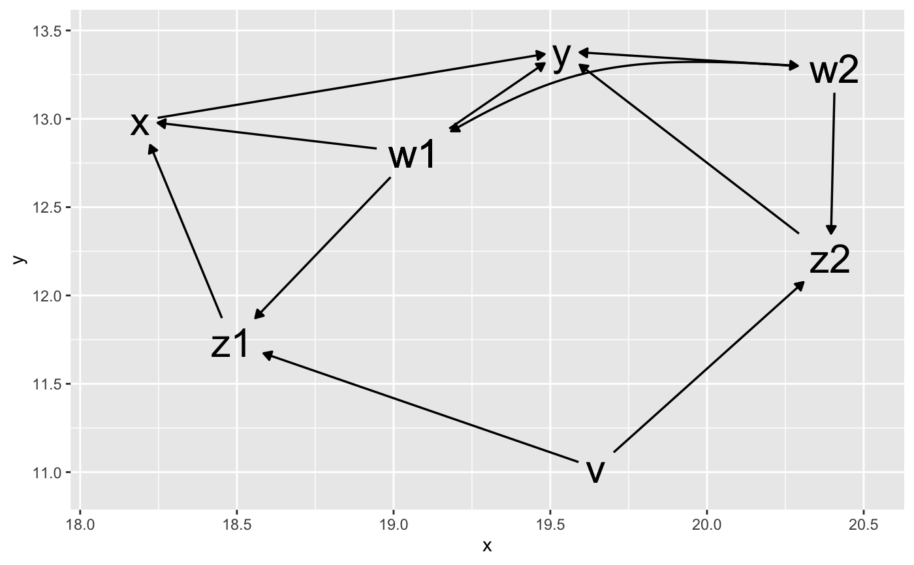
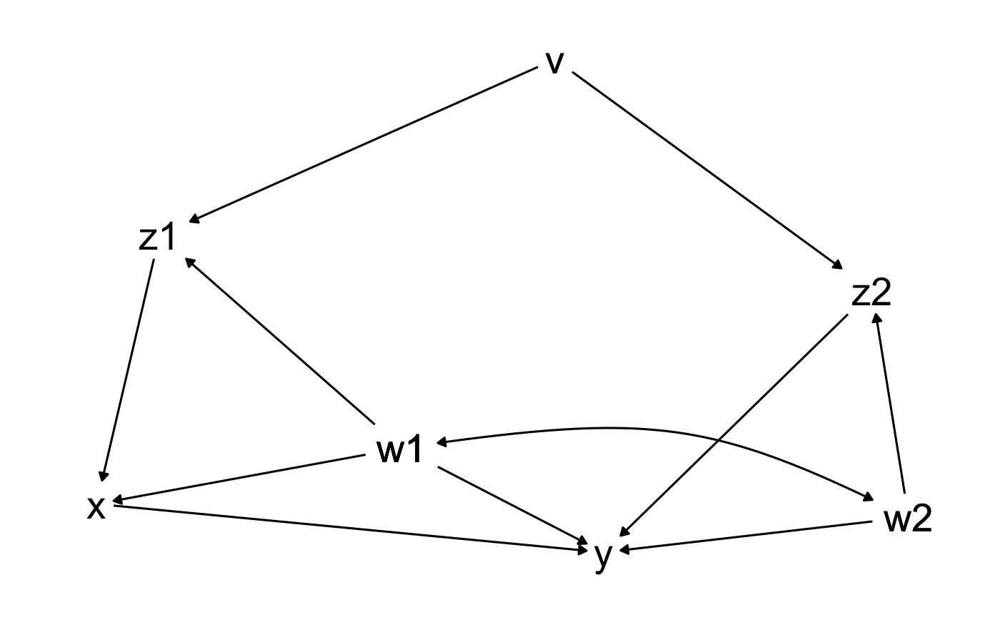
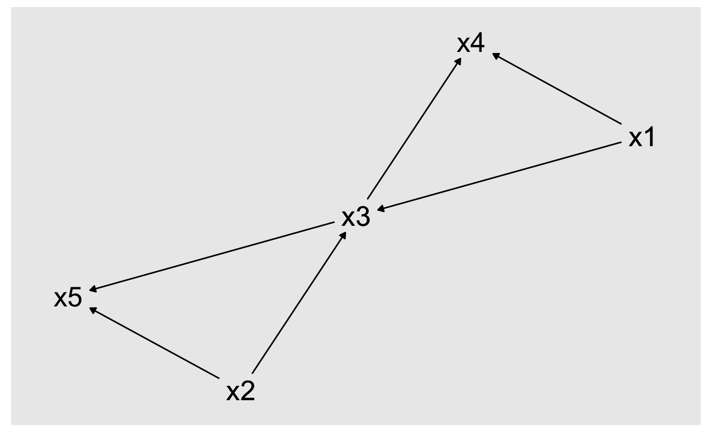

ggdag_classic() is a wrapper to quickly plot DAGs in a more
traditional style.
ggdag_classic(.tdy_dag, ..., size = 8, label_rect_size = NULL, text_label = "name", text_col = "black")
| .tdy_dag | input graph, an object of class |
|---|---|
| ... | additional arguments passed to |
| size | text size, with a default of 8. |
| label_rect_size | specify the |
| text_label | text variable, with a default of "name" |
| text_col | text color, with a default of "black" |
a ggplot
dag <- dagify(y ~ x + z2 + w2 + w1, x ~ z1 + w1, z1 ~ w1 + v, z2 ~ w2 + v, w1 ~~ w2) ggdag_classic(dag)